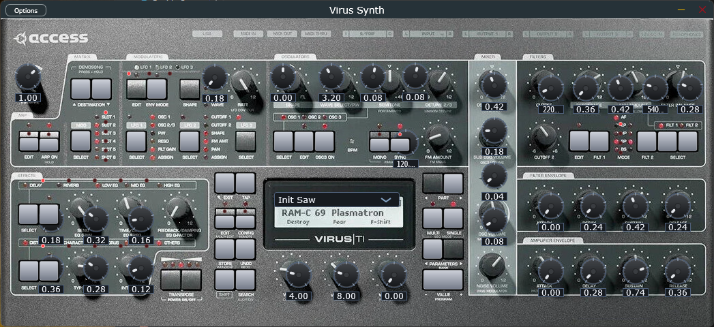
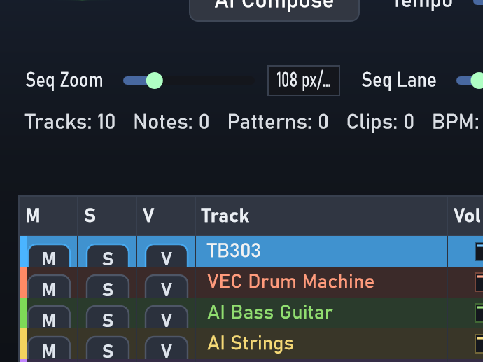
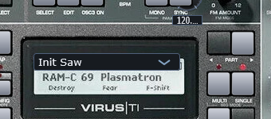
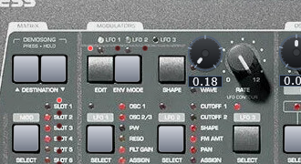
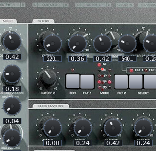

Overview
Editor layout

Step 1
Load Virus Synth on a track

- Create or select an instrument track.
- Assign Virus Synth from the rack browser or track controls.
- Use Edit VST or the track V toggle to open the editor.
If the rack list does not show the plugin, restart the app so it rescans the bundled vsti folder on startup.
Step 2
Browse presets from the LCD / OSD

- Use the two PART buttons beside the LCD to step backward or forward through presets.
- You can also use the lower-right VALUE PROGRAM - / + buttons.
- When the preset page is active, the bottom VALUE 1 / 2 / 3 knobs can browse programs too.
- The LCD stays pinned on the preset page while you browse, so it does not fall back to a generic parameter readout.
The LCD header uses a TI-style format: SINGLE / MULTI on the left, a CAT: field in the middle, and the RAM bank + slot on the right.
Step 3
Edit oscillators and shared top-row controls
- Press OSC SELECT to cycle the edit focus across OSC 1, OSC 2, and OSC 3.
- The LED strip above the oscillator buttons shows which oscillator is active.
- Use the top-row knobs for Wave, Wave Select / PW, Semitone, and Detune 2/3.
- Use FM Amount below that row for the shared FM depth control.
- Press OSC EDIT to pin an oscillator page on the LCD and edit it from the three bottom value knobs.
Step 4
Use the modulation OSD workflow

- Press an LFO SELECT button once to focus that LFO.
- Repeated clicks on the same SELECT button cycle its visible destination LEDs.
- Use the dedicated RATE knob for the selected LFO speed.
- Press ENV MODE to toggle between free-running and note-triggered behavior for the selected LFO.
- Press SHAPE to cycle the LFO wave shape.
- On the pinned LCD page, the lower value knobs edit: VALUE 1 = amount, VALUE 2 = rate, VALUE 3 = destination.
In the current workflow, the destination LEDs mirror the selected LFO destination shown on the LCD, while an amount of zero effectively turns the modulation off.
Step 5
Edit filters, FX, and matrix pages

- Press FILTER EDIT to cycle the filter pages: Filter 1, Filter 2, then Filter Common.
- Use FLT 1 and FLT 2 with the LEDs to manage filter modes and active routing.
- Press FX SELECT to move the focused effect row.
- Press FX EDIT to pin the selected upper or lower FX page on the LCD.
- The upper row currently exposes Delay, Reverb, and the three-band EQ pages with real DSP backing their values.
- The matrix page uses the bottom value knobs for source, amount, and destination on the selected row.
Step 6
Use SHIFT, BG, and KB
SHIFT layer
Click SHIFT once to latch the red secondary layer. The LED above it confirms that shifted functions are active.
Shifted actions
SHIFT + ARP ON holds the arp, SHIFT + MONO sends panic, SHIFT + STORE randomizes the preset, and SHIFT + SEARCH auditions the current program.
BG and KB
Use BG to switch between the faceplate view and the schematic overlay. Use KB to show or hide the preview keyboard at the bottom of the editor.
Reference
Quick workflow summary
Preset workflow
- Step presets with PART or VALUE PROGRAM.
- Read the current bank / slot / category from the LCD.
- Use SEARCH for the preset browser page.
Edit workflow
- Choose a section with EDIT or SELECT.
- Watch the LCD page change to that section.
- Use VALUE 1 / 2 / 3 to edit the pinned page.